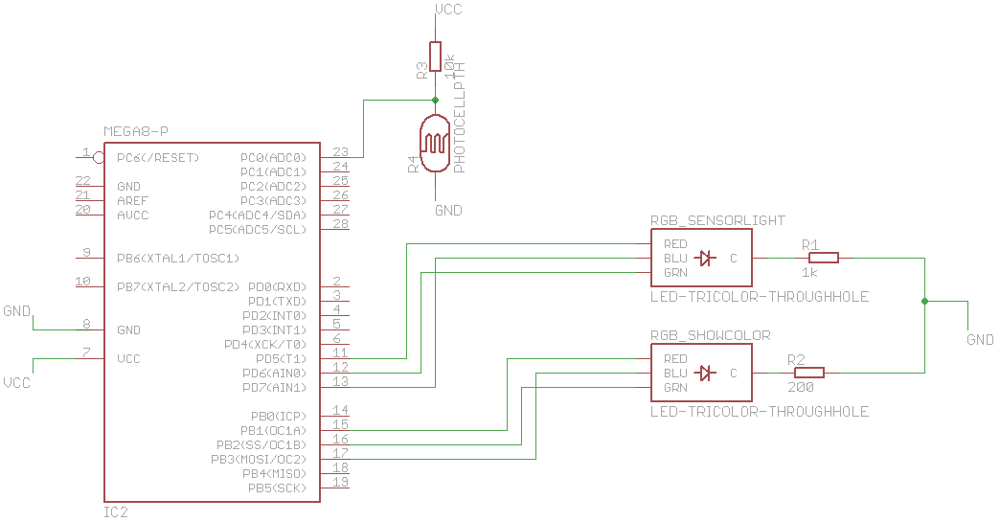
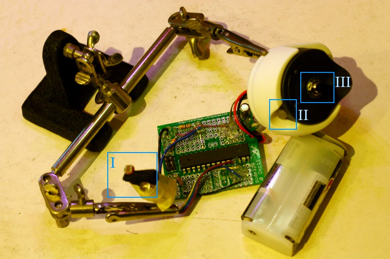

Purpose
A novelty, a small item you put at some place and it detects the color of what it has been placed on and change its color accordingly.
How it works : light something with 3 different color and measure how much light is reflected. If you have taken provision in advance (and stored in in the EEPROM memory) the answer to pure white and pure black in the red, green and blue color component, map your results to that interval, make it a ratio on [0;255] scale : you got your PWM value for that component.
See it like a 2 parts item : bottom contains a CdS and a RGB led to light and "read" each color (R/G/B), a top part that would change color with a RGB led to "show" the color that was read. The bottom part would light up 1 sec every n sec to check the color and amend the RGB color at the top.
Notabene : dam#### when you have a good idea, there's always
someone who had the same just before ...
20111219 : one evening of this and that, I'got on my arduino (prototype) a reading of default balance saved in EEPROM. The readings now are not always consistent nor great but seem to go in the right direction however. A bit more tuning and maybe I'll have something working as a prototype.
201112xx: Now it's packed in a recycled salt tube, looks like a wand, it became a
CameleonWand ! Working not too bad, except for the greenish stuffs. Reds are nicely detected, blue too, green aren't. I must have failed something somewhere for sure...
20120207: saw some other projects of that kind on the net today, but using a color detector instead of a simple inexpensive CdS.
This is the site. Should put a picture or video of mine someday...
Component
- A ATmega328: needs at minimum 3 PWM (for the RGB "show" part) %20 1 analog input (to read the CdS) %20 3 digital out pin to light the R/G/B led at the bottom to see the color reflection.
- In fact I got lazy and just reimplemented what I made with my Arduino as a prototype. Yes, agreed, Atmega328 is an overkill .. maybe 100 JPY of overkill ... promise I'll be a better geek later.
- A CdS for the poor man color sensing
- A RGB led to the CdS to "see" under him
- A RGB led for the color to "show" the color it sees
- A handful of resistors (2 in fact)
- A homemade Rapide328 arduino minus usb clone for the board
Code
As usual,
on google code. This one is poorly documented I have to admit, sorry. But since it's not very complex, should be ok I hope.
You might (quite sure) want to change the values that are stored in the EEPROM that are my sample results to pure white and pure black, I think it's a key to a better result. Also I tried to rebalance the color roughly by affecting some wheight to the RGB components when I display the color, you might also want to reconsider that...
Schema

Nothing complex here.
Pictures & Video

I: CdS and the reading led. II: Show led, also RGB. III: on switch (pushbutton). Board is a Rapide328.